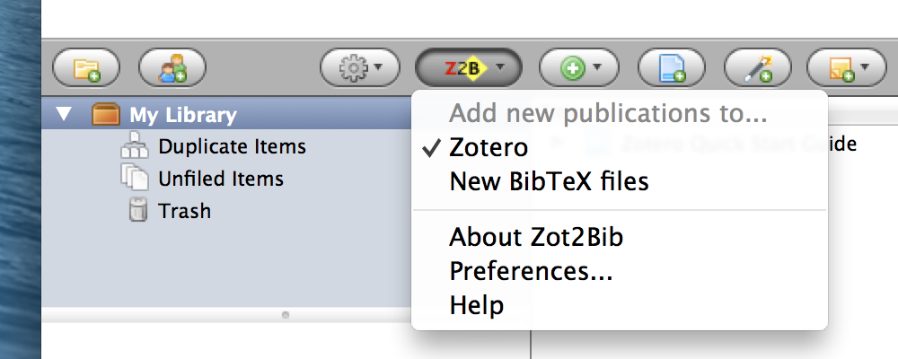

Zotero-to-BibDesk help
What is it for?
Zot2Bib gives you all the no-typing-required, bibliographic scraping goodness of Zotero, right alongside the TeX-compatibility and general Mac-like loveliness of BibDesk.
With Zot2Bib, any time you get something automatically added to your Zotero library, you can also have it automatically exported to one or more BibDesk documents.
Where do I start?
Start by ensuring:
- you are running Mac OS X 10.4 or higher (click your Apple menu and choose 'About This Mac'),
- you have exactly one copy of BibDesk on your Mac (some LaTeX distributions bundle their own copy; use Spotlight to check), and
- your one copy of BibDesk is up to date (open BibDesk, click its 'BibDesk' menu, and 'Check for Updates...').
Next, note this: at the moment you install it, Zot2Bib is configured to do nothing at all. Click the Z2B icon at the bottom right of this Firefox window. What you see should be pretty much like this...

...which is telling you that all new publications are going to your Zotero library, just like they always did.
To test Zot2Bib, pick the option 'New BibTeX files' in this menu. Now add a publication to Zotero: for example, find a random paper on ScienceDirect and click the Zotero icon in Firefox's address bar. That's the one that looks like this:
 ).
).
You should find that:
- BibDesk opens (if it wasn't open already),
- a new document 'Untitled' pops up, containing that paper, and
- an editing window for the paper pops up too.
Feel free to close these windows.
Finally, for everyday use, it's probably more useful to set Zot2Bib to direct new publications to one or more specific BibDesk documents, rather than creating a new document for each one. So, go back to the Z2B status bar icon, click for the menu, and choose 'Preferences...'.

Click 'Add...', and choose an existing BibDesk (blahblah.bib) document. And now, finally finally (this bit is important), go back to the Z2B context menu and select the file you just added. For example:
You're all set! For more advanced usage, read on...
Preferences
Zot2Bib's preferences dialog allows you to manage the set of BibDesk documents to which you can choose to have new Zotero publications exported, and to set some additional options.
It does not allow you to set which BibDesk document(s) new publications will actually be sent to: for that, you use the Z2B context menu as described in the section above.
Managing BibDesk files
The 'Add...', 'Remove', 'Move up' and 'Move down' buttons are, hopefully, now self-explanatory.
The other option here, 'Permit selecting multiple destinations', also does what it says on the tin. With this box unchecked, which is the default, there can only be one destination active at one moment, and selecting a new one from the Z2B context menu deselects the existing one.
With this box checked, you can have anywhere between zero and all of the destinations in the Z2B context menu selected at one time, like so:
This may be useful if, for example, you want to keep a copy of your publications in the Zotero library as well as in BibDesk.
Add extra braces around its Title field
Turns the publication title 'Obama elected US President' into '{Obama elected US President}' in BibDesk. This prevents your LaTeX styles rendering 'Obama elected us president' (down-cased), which makes a lot less sense.
Open it for editing in BibDesk
Opens each added publication in a new BibDesk window for editing (so that you can check details, add keywords, and drag in a PDF file, for example).
Bring BibDesk to front
Makes BibDesk pop up and get in your way when a new publication is added, to assist with the above.
Known issues
Wish list
Change log
- 2.0 Addition of multiple switchable destinations, various preferences, and a user interface to access them
- 1.0.5 Updates to install manifest for Firefox 3
- 1.0.4 Updates to install manifest for Zotero 1.0.4
- 1.0.3 Minor AppleScript modifications to reflect apparent changes to AppleScript support in BibDesk 1.3.16
- 1.0.2 Reliability improvements suggested by Zotero developers, and AppleScript fixes for OS X 10.4
- 1.0.1 Bug fixes and refactoring